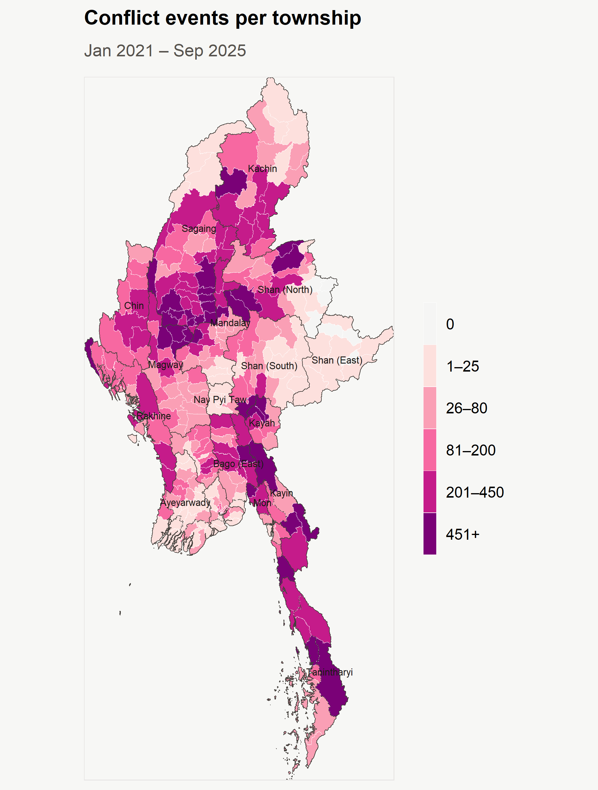
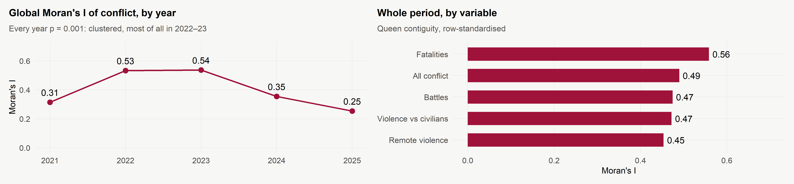
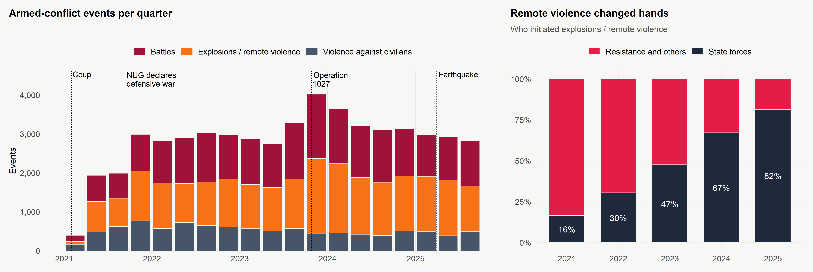
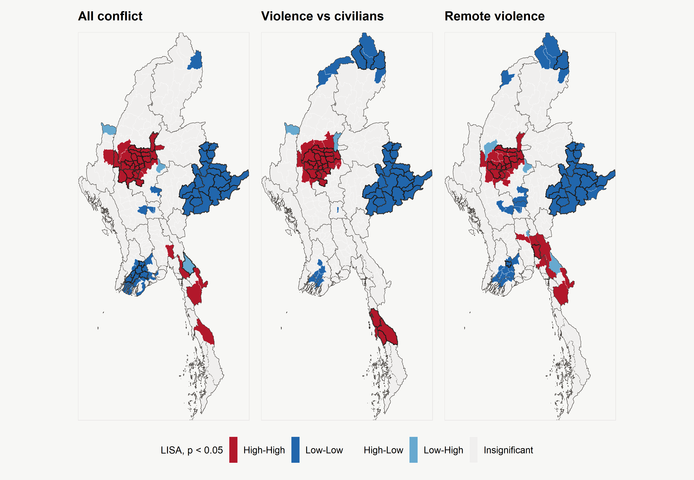
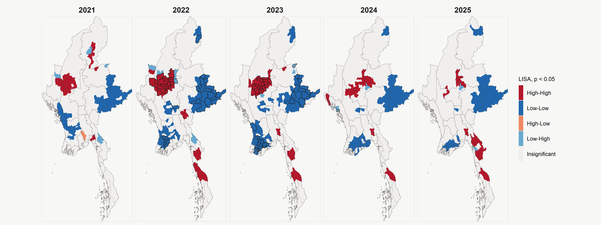
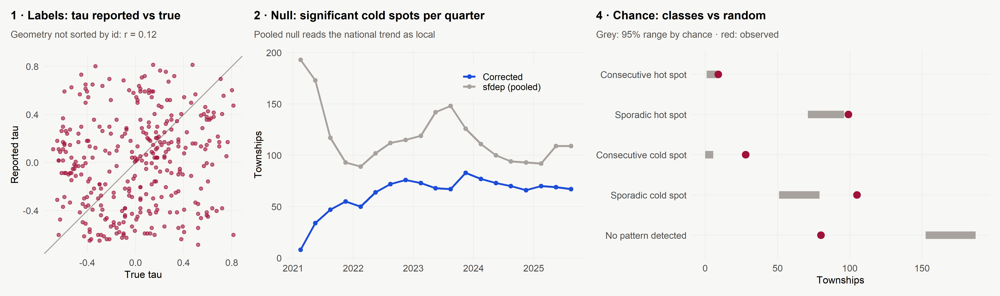
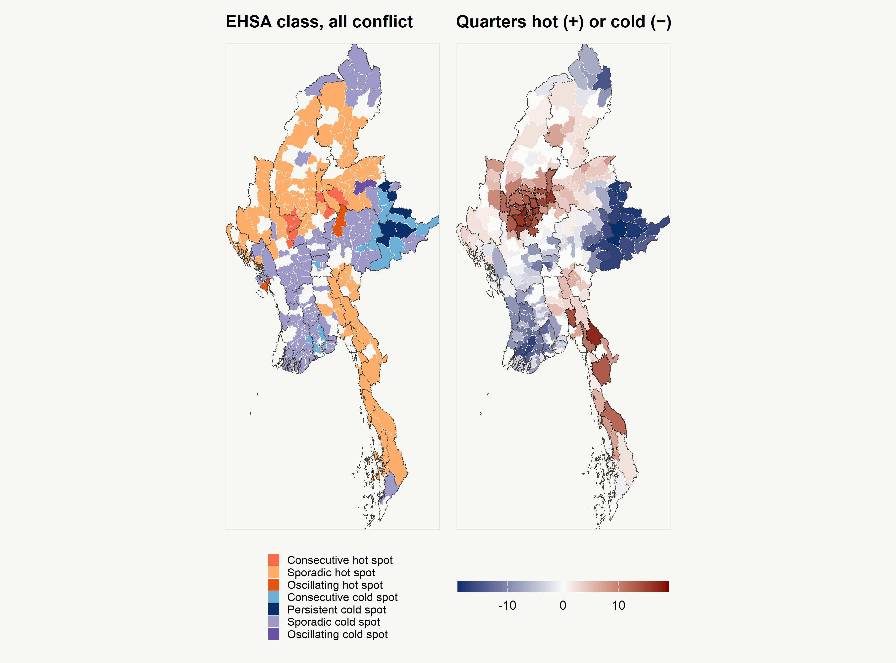
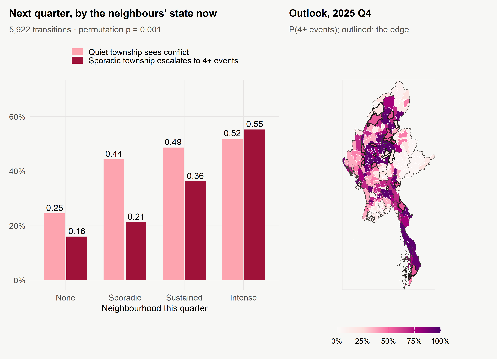

Hot spots, cold spots and the spread of armed conflict
Myanmar, by township · January 2021 – September 2025武装冲突的热点、冷点与扩散
缅甸镇区 · 2021 年 1 月至 2025 年 9 月
2026-10-22
EXECUTIVE SUMMARY · TEN SLIDES执行摘要 · 十页
Full detail完整内容
Every number here is computed in the technical report, which documents the data preparation, the methods and their checks, and the code.
这里的每个数字都在技术报告中计算得出,报告记录了数据准备、 方法及其检验,以及代码。
01 · WHERE, HOW IT EVOLVES, HOW IT SPREADS01 · 在哪里、如何演变、如何扩散
RQ1 · WhereRQ1 · 在哪里
Where are the significant hot spots, cold spots and outliers of armed conflict among Myanmar’s townships?
缅甸各镇区武装冲突的显著热点、冷点与异常值在哪里?
RQ2 · How it evolvesRQ2 · 如何演变
Which townships are new, persistent, sporadic or diminishing hot and cold spots, quarter by quarter?
逐季度来看,哪些镇区是新出现、持续、零星或减弱的热点与冷点?
RQ3 · How it spreadsRQ3 · 如何扩散
Does conflict spread to neighbouring townships, and does that start it or escalate it?
冲突会扩散到相邻镇区吗?它是引发冲突,还是使冲突升级?
53,805 Armed-conflict events analysed, 329 townships, 19 quarters被分析的武装冲突事件,329 个镇区,19 个季度
35 High-High townships: the Dry Zone and the south-east「高-高」镇区:干燥带与东南
2.43× Odds of escalating per unit of neighbours’ log conflict, with fixed effects邻居冲突(对数)每增加一单位的升级优势比(含固定效应)
Where在哪里
One dominant cluster in the Dry Zone where Sagaing, Magway and Mandalay meet; a weaker chain in the south-east; cold zones in the delta, Yangon and eastern Shan.
一个占主导的干燥带聚集(实皆、马圭、曼德勒交界);较弱的东南链条;冷区位于 三角洲、仰光与掸邦东部。
How it evolves如何演变
A stable core with moving edges: new hot spots on the south and east of the Dry Zone; Yangon turned cold after 2022. The off-the-shelf EHSA tool needed three corrections first.
稳定的核心,移动的边缘:干燥带南缘与东缘出现新热点;仰光在 2022 年后转为冷点。 现成的 EHSA 工具需要先做三项修正。
How it spreads如何扩散
Onset in 2021 was nationwide and simultaneous. Escalation is contagious: a township’s next quarter depends on its neighbours.
2021 年的爆发是全国同时发生的。升级则具有传染性:一个镇区下一季度的状况取决于 其邻居。
02 · STUDY AREA AND DATA02 · 研究区与数据

ACLED eventsACLED 事件
87,109 records, Jan 2021 – Sep 2025. Three armed-conflict types kept: battles, explosions/remote violence, violence against civilians, plus their fatalities.
87,109 条记录,2021 年 1 月至 2025 年 9 月。保留三类武装冲突: 战斗、爆炸/远程暴力、针对平民的暴力,以及相应的死亡人数。
MIMU townships v9.4MIMU 镇区 v9.4
330 townships; 329 analysed (Cocokyun, 126 km offshore and without a single event, excluded); two islands linked to the mainland.
330 个镇区;分析 329 个(距岸 126 km、没有任何事件的 Cocokyun 被排除);两个岛屿 与大陆相连。
Land mines cleared清除的地雷
03 · METHODS03 · 分析方法
1 · Prepare1 · 准备
Audit and screen events; join to townships; complete a 329 × 19 space-time cube with zeros where nothing happened.
审计与筛查事件;连接到镇区;构建完整的 329 × 19 时空立方体,无事件之处填零。
2 · LMSA2 · LMSA
Global Moran’s I, then local Moran’s I (clusters, outliers) and Gi* (hot, cold), 999 conditional permutations, FDR shown.
全局 Moran’s I,然后是局部 Moran’s I(聚集、异常值)与 Gi*(热、冷),999 次 条件置换,并显示 FDR 结果。
3 · EHSA3 · EHSA
Space-time Gi* per quarter, Mann-Kendall trend, Esri classes. sfdep’s tool checked against an independent implementation first.
逐季度的时空 Gi*、Mann-Kendall 趋势、Esri 类别。先用独立实现检验 sfdep 的工具。
4 · Value added4 · 附加价值
Spatial Markov chain of conflict states, fixed-effects logit and onset timing, each against a permutation null; back-tested.
冲突状态的空间马尔可夫链、固定效应 logit 与爆发时间,各自对照置换零模型; 并做回测。

Why check the tool为什么要检验工具
A hot spot map that is wrong looks exactly like one that is right. Every statistic here was reproduced independently, and each analytical choice was varied one at a time to see what moves.
一张错误的热点地图,看起来和正确的完全一样。这里的每个统计量都经过独立复现,每项 分析选择都逐一改变,以观察哪些结果会随之移动。
04 · THE NATIONAL TRAJECTORY04 · 全国走势

Conflict rose from 398 events in 2021 Q1 to 4,021 in 2023 Q4, the quarter of Operation 1027, and has stayed near 3,000 a quarter since.
冲突从 2021 年第一季度的 398 起,升至 2023 Q4 的 4,021 起(1027 行动所在季度),此后一直维持在每季度约 3,000 起。
Remote violence is now the largest category, and by 2025 the military initiated 82% of it: air strikes, drones and artillery.
远程暴力如今是最大的类别,到 2025 年其中 82% 由军方发起: 空袭、无人机与炮击。
The national series trends strongly, which is exactly what breaks the standard EHSA null model (slide 9).
全国序列趋势明显,这恰恰是标准 EHSA 零模型失效的原因(第 9 页)。
05 · LOCAL MEASURES OF SPATIAL ASSOCIATION05 · 局部空间关联

Clusters聚集
35 High-High townships: a solid block in the Dry Zone (Sagaing–Magway–Mandalay), which survives FDR correction, and a weaker south-eastern chain that does not.
35 个「高-高」镇区:干燥带(实皆–马圭–曼德勒)的 连片区块通过了 FDR 校正;较弱的东南链条则没有。
By type按类型
Violence against civilians is almost all Dry Zone; remote violence adds the south-east. No significant High-Low outliers.
针对平民的暴力几乎全在干燥带;远程暴力还延伸到东南。没有显著的「高-低」 异常值。
Cold冷区
52 Low-Low townships: the delta, Yangon and the eastern Shan hills. Gi* puts 318 of 329 townships on the same side.
52 个「低-低」镇区:三角洲、仰光与掸邦东部山地。Gi* 把 329 个镇区中的 318 个放在同一侧。
06 · LOCAL MORAN’S I, YEAR BY YEAR06 · 逐年局部 Moran’s I

2021–2023: the Dry Zone cluster grows and holds; Moran’s I peaks at 0.54.
2021–2023: 干燥带聚集扩大并保持;Moran’s I 在 0.54 达到峰值。
2024: new fronts in Rakhine and northern Shan; the Dry Zone core thins as the rest of the country catches up.
2024: 若开与掸邦北部开辟新前线;随着全国其他地区追赶上来,干燥带核心变得稀疏。
2025: clusters split between the Kayin border, the uplands where Mandalay meets northern Shan, and a remnant of the core. The eastern Shan cold zone never moves.
2025: 聚集分散在克伦边境、曼德勒–掸邦北部交界山地与老核心残余三处。掸邦东部 冷区从未移动。
07 · THREE DEFECTS IN sfdep 0.2.5, AND ONE TRAP07 · sfdep 0.2.5 的三个缺陷与一个陷阱

1 · Wrong township1 · 张冠李戴
Unless the polygons are sorted by id, 99% of townships get another township’s result.
除非多边形按编号排序,否则 99% 的 镇区会拿到另一个镇区的结果。
2 · Pooled null2 · 混合零模型
2021 Q1: 193 “significant” cold spots against 8 with a same-quarter null.
2021 年第一季度:193 个「显著」冷点,而同季度 零模型下只有 8 个。
3 · Class rule3 · 分类规则
“Intensifying hot spot” ignores the sign: a township cold in 18 of 19 quarters was labelled one.
「增强热点」规则忽略符号:一个 19 个季度中 18 个为冷点的镇区被贴上了这个标签。
4 · Chance4 · 偶然
~84 “sporadic hot spots” arise by chance alone; the count of hot quarters matters more than the label.
约 84 个 「零星热点」单凭偶然就会出现;热季度数比标签更重要。
08 · EMERGING HOT SPOT ANALYSIS08 · 新兴热点分析

Hot热点
Chronic core: Myaing, Pakokku, Yesagyo, Salingyi and Singu hot every quarter since late 2021, plus 23 sporadic hot spots hot in 11+ quarters, Monywa among them. New edge: Chauk, Nyaung-U, Pyinoolwin and Kyaukme, south and east of the core, plus Meiktila and Kyaukse for single variables.
长期核心:敏建、木各具、耶沙久、沙林基与新古自 2021 年底以来每季度都是热点;另有 23 个零星热点在 11 个 以上季度为热点,包括蒙育瓦。新边缘:核心以南、以东的稍埠、良乌、眉谬与皎梅;单项变量中还有密铁拉与皎施。
Cold冷点
28 consecutive and 5 persistent cold spots (chance: about 2 and 0). Eastern Shan and Wa: cold throughout. Yangon: cold since 2022, after the urban resistance was suppressed.
28 个连续与 5 个持续冷点(偶然情况下约为 2 与 0)。掸邦东部与佤地区:始终是冷点。仰光:2022 年后 转冷,源于城市抵抗被镇压。
Watch注意
Three of the five townships with the most events (Kawkareik, Kale, Hpakant) show no pattern: a hot spot map is not a list of the most violent places.
事件最多的五个镇区中有三个(高加力、葛礼、帕敢)显示无模式:热点地图不是最暴力 地点的名单。
09 · VALUE-ADDED: SPATIAL MARKOV CHAIN AND EARLY WARNING09 · 附加价值:空间马尔可夫链与预警

Escalation is contagious升级具有传染性
A quiet township beside intense fighting is about twice as likely to see conflict next quarter. With township and quarter fixed effects the odds ratio is 2.43 (95% CI 2.04–2.90).
与激烈战斗相邻的平静镇区,下一季度出现冲突的可能性约为两倍。加入镇区与季度 固定效应后,优势比为 2.43(95% CI 2.04–2.90)。
Onset was not爆发则不然
First onsets are no more clustered than chance (p = 0.11): 2021 was a nationwide outbreak. Since 2023, every new onset bordered an active township.
首次爆发不比偶然更聚集(p = 0.11):2021 年是全国性的 爆发。2023 年以来,每一次新爆发都与活跃镇区相邻。
Back-tested回测
Fitted to 2024, tested on 2025: the neighbourhood lifts AUC from 0.71 to 0.83. 20 edge townships are flagged for 2025 Q4.
用截至 2024 年的数据拟合、在 2025 年检验:邻域信息使 AUC 从 0.71 提高到 0.83。 为 2025 年第四季度标出了 20 个边缘镇区。
10 · FOR PEACE-BUILDING AND PUBLIC SAFETY10 · 面向和平建设与公共安全
| Finding研究结果 | Implication启示 |
|---|---|
| Escalation spreads to neighbours, and the edge is predictable a quarter ahead升级会向邻居扩散,边缘可以提前一个季度预测 | Pre-position protection, aid and monitoring in edge townships before violence arrives; refresh every quarter在暴力到来之前,于边缘镇区预置保护、援助与监测;每季度更新 |
| Violence against civilians is moving south of the Dry Zone and into western Bago针对平民的暴力正向干燥带以南与勃固西部移动 | Extend documentation and humanitarian access south of the Sagaing core把记录工作与人道准入延伸到实皆核心以南 |
| Remote violence is the largest category and mostly the military’s远程暴力是最大的类别,且主要来自军方 | Plan early warning, shelter and medical capacity for a risk map wider than the front line按照一张比前线更宽的风险地图,规划预警、避难与医疗能力 |
| Eastern Shan is cold throughout; Yangon became cold by suppression掸邦东部始终是冷点;仰光则因镇压而变冷 | The first may suit local ceasefires and returns; the second is not a settlement前者或许适合地方停火与返乡;后者不是和解 |
Limitations局限
Recorded, not all, events: reporting is thinnest where cold spots are. Counts, not risk: no population figure survives three million displacements. Results depend on township, quarter and queen contiguity, and the diffusion results are observational.
被记录的事件,而非全部事件:冷点所在之处恰是报道最薄弱的地方。计数,而非风险: 三百万人流离失所之后,不存在可用的人口数据。结果取决于镇区、季度与 queen 邻接, 扩散结果是观察性的。
ISSS626 · Take-home Exercise 2 · Armed conflict in Myanmar, LMSA and EHSAISSS626 · 课后作业二 · 缅甸武装冲突的 LMSA 与 EHSA